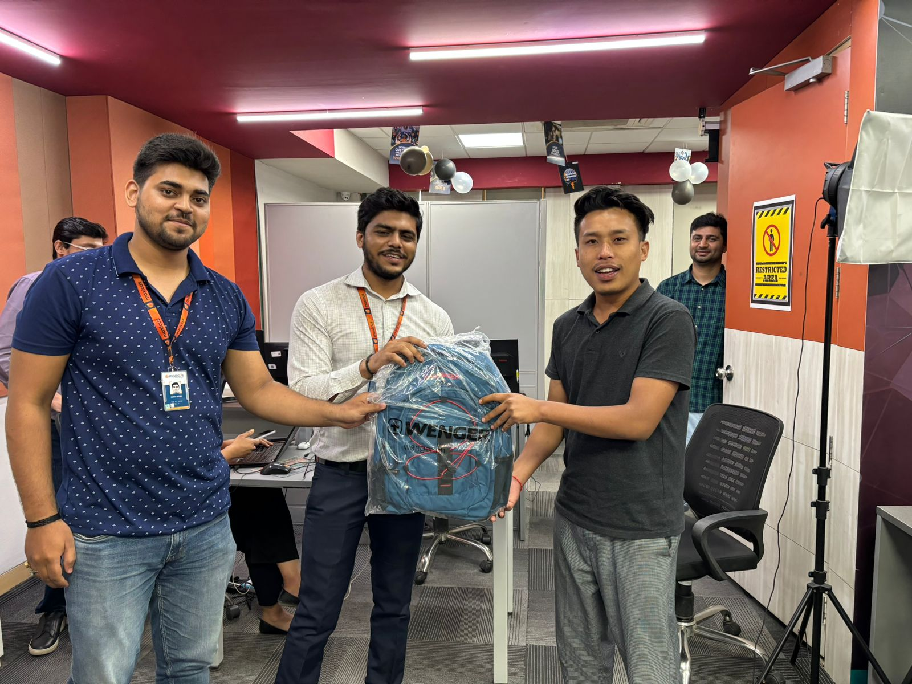

Shining Stars of Samsung V-promoter

Gyan Bahadur
We are thrilled to recognize Gyan Bahadur as the top revenue 4030079/-earner for July-24. Your hard work and dedication have truly paid off. Through extending shifts, taking multiple follow-ups, and showing incredible initiative, you have set a remarkable example for everyone. Your efforts not only highlight your commitment but also significantly contribute to our success.

Samual Tamang
We are excited to recognize Samual Tamang as the 2nd top revenue earner for July 2024, with ₹3,115,387. Your dedication, extended shifts, and initiative have set a great example and greatly contributed to our success.